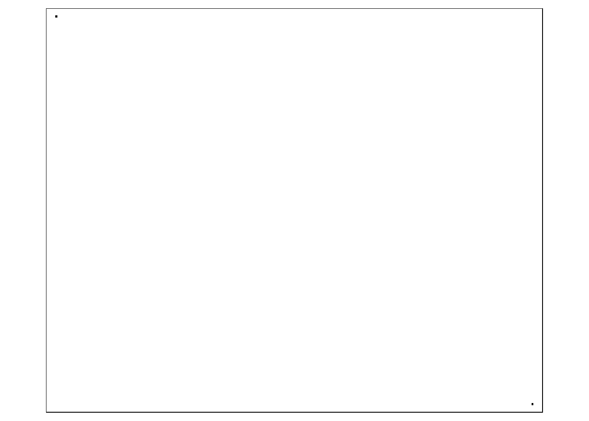
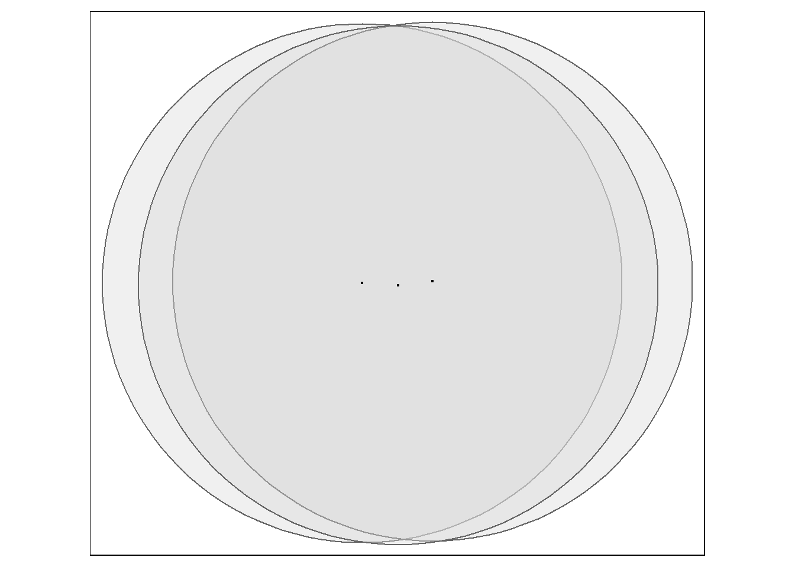
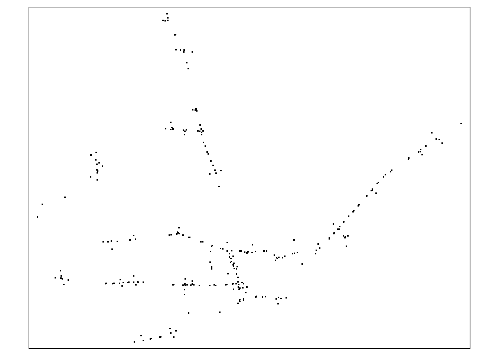
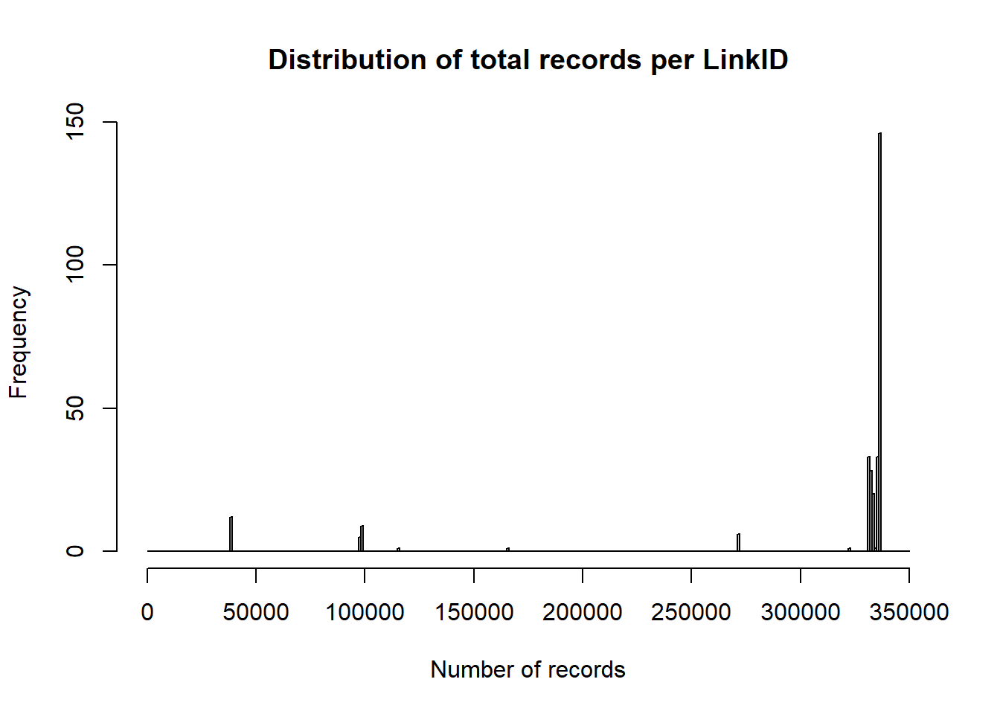
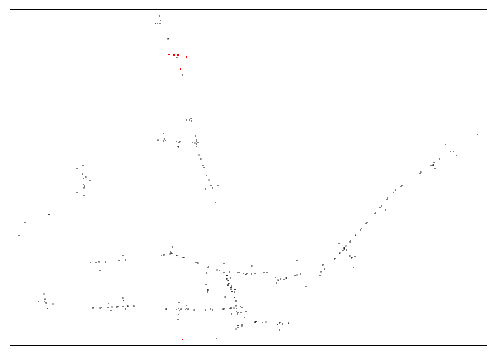
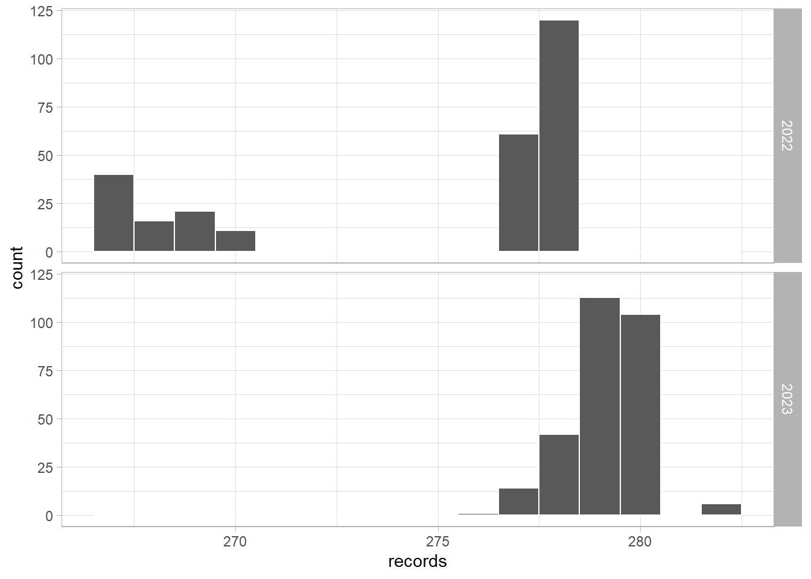
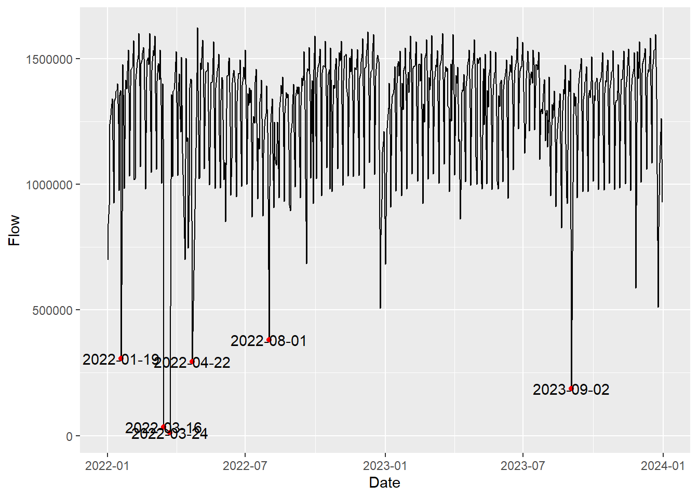
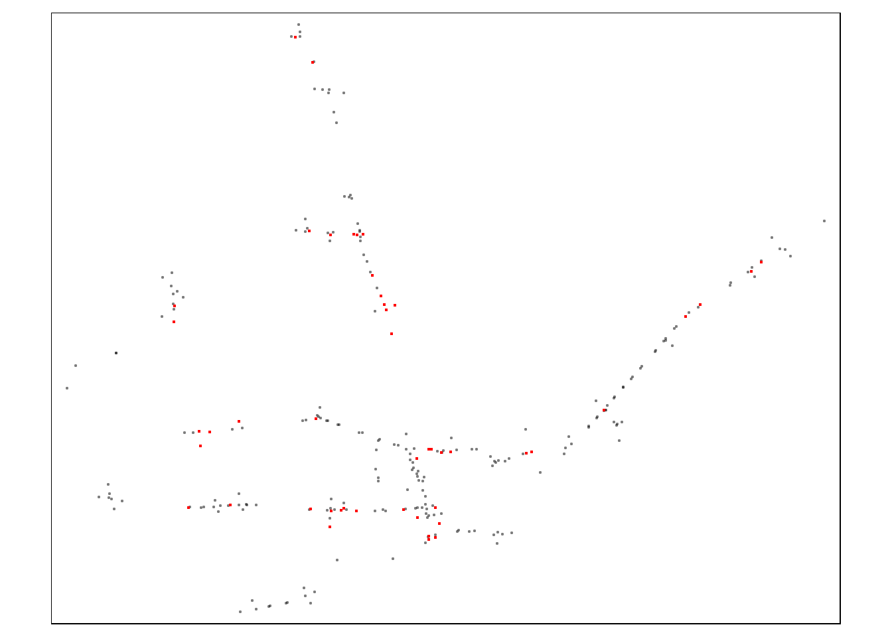
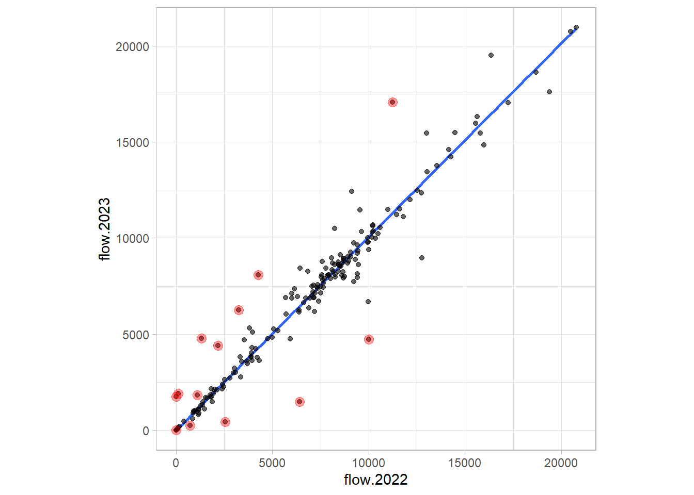
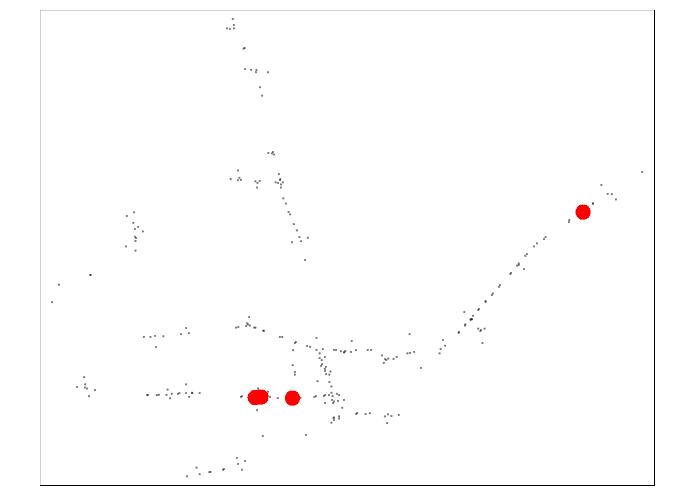

library(tidyverse)
library(rjson)
library(httr)
library(sf)
library(tmap)Count Data
Sensor summary
The following code loads the file with the summary of scoot loop sensors in Hull
loop_Locations <- GET("https://opendata.hullcc.gov.uk/dataset/30fd3969-556d-4eae-ae4c-f3f9d2cfa9e3/resource/90e1cce0-295e-4fa7-aa21-ebc4f3e8e8d4/download/scoot_loop_resources_full.json")
my_response <- rjson::fromJSON(content(loop_Locations,'text',encoding = "UTF-8"))
my_data <- data.frame(do.call(rbind,
lapply(my_response,
rbind))) |>
unnest(cols = everything()) |>
filter(longitude != 0)A spatial object is created using the coordinates of the sites
sf_cameras <- my_data |>
st_as_sf(
coords = c("longitude","latitude"),
crs = 4326) |>
st_transform(crs = 27700)tm_basemap() +
tm_shape(sf_cameras) +
tm_dots()
There are some issues with the coordinates of some sites. The following code fixes the problem
my_data[my_data$latitude<0,c("longitude","latitude")] <- rev(my_data[my_data$latitude<0,c("longitude","latitude")])The description column contain useful information on the location of each sensor, this can be used to identify sensors corresponding to different lanes in the same road, for example.
my_data_expanded <- my_data |>
mutate(description = str_replace(description,"HE SITE - ","HE SITE _ ")) |>
separate_wider_delim(description,delim = " - ",names = c("desc","direction","url","coord")) |>
select(-coord)sf_sensors_raw <- my_data_expanded |>
st_as_sf(
coords = c("longitude","latitude"),
crs = 4326) |>
st_transform(crs = 27700)
tm_basemap("OpenStreetMap") +
tm_shape(sf_sensors_raw) +
tm_dots()Grouping sensors
sensors_buffer = sf_sensors_raw |>
st_buffer(dist = 20)tm_basemap("OpenStreetMap") +
tm_shape(sensors_buffer |>
filter(name %in% c("N44131F","N44131X","N44131H"))) +
tm_polygons(alpha = 0.4)+
tm_shape(sf_sensors_raw) +
tm_dots()
buffer_groups <- st_cast(st_union(sensors_buffer),"POLYGON")
sensors_overlap <- st_intersects(buffer_groups,sf_sensors_raw)
sensors_overlapSparse geometry binary predicate list of length 189, where the
predicate was `intersects'
first 10 elements:
1: 285
2: 287
3: 286
4: 12
5: 5
6: 40
7: 15, 17
8: 13, 16
9: 14
10: 9Flow Direction refining
The description of the count sites refers to the junction where the induction loops are installed, and not necessarily correspond to actual road where they are installed.
The sites shown in the map below, for example, are all described as “TSI047 COUNTY ROAD / BRICKNALL AVE”, but they correspond to the four arms of the junction with sensors on Fairfax Ave, Bricknell Ave, and National Ave.
tmap_mode("view")tmap mode set to interactive viewingtm_basemap("OpenStreetMap")+
tm_shape(sf_sensors_raw |>
filter(str_detect(desc,"TSI047 COUNTY ROAD / BRICKNALL AVE")))+
tm_dots(col = "darkgreen",
size = 2,
alpha = 0.7,
group = "Selected sites")Also, the direction of the different counts, in some cases, refer to the specific lane where the sensors are installed. Therefore, it is useful to extract the flow direction from description.
Some count points need to be adjusted manually: - there is no a valid description of the direction of sensor N43121Y. See this. - there is a typo (wesbound instead of westbound) in the direction of sensors N40134Fand N45131D.
my_data_expanded$direction[my_data_expanded$name == "N43121Y"] <- "EASTBOUND"
my_data_expanded$direction[my_data_expanded$name %in% c("N40134F", "N45131D")] <- "WESTBOUND"my_data_expanded_dir <- my_data_expanded |>
mutate(dir_str = str_to_lower(direction) |>
str_extract(pattern = "\\b\\w*bound\\b")) |>
mutate(origin_str = if_else(is.na(dir_str),
direction |>
str_remove("TRAVEL{1,3}ING ") |>
str_remove("\\sINTENDING") |>
str_extract("\\w*(\\s)?\\w*\\b(?=\\sTO)"),
NA)) |>
mutate(dir_str = case_when(is.na(dir_str)&origin_str=="EAST"~"westbound",
is.na(dir_str)&origin_str=="NORTH"~"southbound",
is.na(dir_str)&origin_str=="SOUTH WEST"~"northeastbound",
is.na(dir_str)&origin_str=="SOUTH"~"northbound",
is.na(dir_str)&origin_str=="WEST"~"eastbound",
is.na(dir_str)&origin_str=="SOUTH NORTH"~"northbound",
is.na(dir_str)&str_detect(direction,"FROM THE NORTH")~"southbound",
is.na(dir_str)&str_detect(direction,"FROM THE SOUTH")~"northbound",
is.na(dir_str)&str_detect(direction,"FROM THE EAST")~"westbound",
is.na(dir_str)&str_detect(direction,"FROM THE WEST")~"eastbound",
TRUE ~ dir_str)) |>
select(-origin_str)dir_groups <- do.call(bind_rows,
lapply(seq_along(sensors_overlap),
function(i){
tsensor <- sensors_overlap[[i]]
id_group <- i
tmp_group <- my_data_expanded_dir[tsensor,] |>
mutate(subgroup_id = cur_group_id(),
group_id = id_group,
.by = c(desc,dir_str)) |>
select(name,desc,dir_str,group_id,subgroup_id)
})) sf_counts <- my_data_expanded_dir |>
left_join(dir_groups,by = join_by(name,desc,dir_str)) |>
summarise(across(ends_with("itude"),mean),
.by = c(group_id,subgroup_id,desc,dir_str)) |>
st_as_sf(
coords = c("longitude","latitude"),
crs = 4326) |>
st_transform(crs = 27700)tmap_mode("plot")tmap mode set to plottingtm_basemap("OpenStreetMap")+
tm_shape(sf_counts) +
tm_dots()
Downloading data
Since the open data platform hosting the counts data is based on CKAN, the raw CSV files can be downloaded directly with the following code (see this):
dir.create("02_raw_data_counts", showWarnings = F)
base_url <- "https://opendata.hullcc.gov.uk/datastore/dump/"
base_path <- "02_raw_data_counts"# In case files are downloaded separately
downloaded_files <- list.files("02_raw_data_counts/")
ids_download <- my_data$resource_id[!(my_data$name %in% gsub("\\.csv","",x = downloaded_files))]
# Loop for downloading files
if (!identical(ids_download, character(0))) {
for (id in ids_download) {
try(download.file(
url = paste0(base_url, id),
destfile = paste0(base_path,
"/",
my_data$name[my_data$resource_id == id],
".csv")
))
}
} Pre-processing
First, we upload the downloaded_files object with all the files available
downloaded_files_full <- list.files("02_raw_data_counts/",full.names = T)library(data.table)
library(dtplyr)
setDTthreads(0)
raw_data <- rbindlist(lapply(downloaded_files_full,fread))
head(raw_data) _id LinkID AttributeID TravelTime VehicleFlow Speed MeasurementTime
<int> <char> <int> <int> <int> <int> <POSc>
1: 1 N10111A 9601773 0 0 0 2020-02-07 15:38:00
2: 2 N10111A 9601773 0 0 80 2020-02-07 16:49:14
3: 3 N10111A 9601773 0 0 80 2020-02-07 16:59:14
4: 4 N10111A 9601773 0 0 80 2020-02-07 17:04:14
5: 5 N10111A 9601773 0 0 80 2020-02-07 17:09:14
6: 6 N10111A 9601773 70 9 80 2020-02-07 17:19:14
Timestamp
<int>
1: 1581089880
2: 1581094154
3: 1581094754
4: 1581095054
5: 1581095354
6: 1581095954Some general checks of the data
Number of sites in the raw data:
raw_data$LinkID |> unique() |> length()[1] 296Range of dates:
raw_data$MeasurementTime |> range()[1] "2020-02-07 15:38:00 UTC" "2024-01-09 19:30:00 UTC"Collection rate check
A check of the number of records per site
hist(raw_data |>
summarise(records = n(),.by = LinkID) |>
as_tibble() |>
pull(records),breaks = seq(0,350000,1000),
xlab = "Number of records",
main = "Distribution of total records per LinkID")
A closer look to the sites with a low number of records:
low_records_IDs <- raw_data |>
filter(between(year(MeasurementTime),2022,2023)) |>
summarise(records = n(),.by = LinkID) |>
filter(records < 150000) |>
as_tibble() |>
pull(LinkID)
low_records_IDs [1] "N10221X" "N30121C" "N48111F" "N48111G" "N48112B" "N48112C" "N48112D"
[8] "N48112E" "N70111A" "N70111B" "N70111C" "N70111D" "N70121F" "N70121H"
[15] "N70131B" "N70131D" "N70141E" "N70141F" "N70141H"tmap_mode("plot")tmap mode set to plottingtm_basemap()+
tm_shape(sf_sensors_raw |>
filter(!(name %in% low_records_IDs)))+
tm_dots(col = "black",
alpha = 0.3,
group = "Other sites")+
tm_shape(sf_sensors_raw |>
filter(name %in% low_records_IDs))+
tm_dots(col = "red",
group = "Low record sites")
daily_data <- raw_data[between(year(MeasurementTime),2022,2023)
][,GBtimestamp := with_tz(MeasurementTime,tzone = "Europe/London")
][,`:=`(Date = date(GBtimestamp),
Year = year(GBtimestamp))][
,.(records = .N,
Flow = sum(VehicleFlow,na.rm = T)),
by = .(LinkID, Date, Year)
]Records per day per site by Year (max 288 5-minutes intervals)
daily_data[,.(records = mean(records)),
.(LinkID, Year)] |>
ggplot(aes(records))+
geom_histogram(binwidth = 1,col = "white")+
facet_grid(Year~.)+
theme_light()
To identify the IDs with a low number of daily records, we run:
low_annual_IDs <- unique(daily_data[,c("Year","LinkID","Date")])[,
.(n_days = .N),
.(LinkID, Year)][n_days<240] |> pull(LinkID)The IDs with low records match exactly the ones previously identified.
identical(low_annual_IDs,low_records_IDs)[1] TRUEThese IDs will be discarded as the available data might not be representative to produce AADF; if the ID is part of a group, the whole group will be discarded as AADF for the group can be affected.
groups_include <- dir_groups |>
mutate(not_include = (name %in% low_annual_IDs)*1) |>
filter(sum(not_include)==0,.by = c(desc,dir_str,group_id)) |>
select(-not_include) Daily flows sense check
total_d_flow <- daily_data |>
inner_join(groups_include,by = c("LinkID"="name")) |>
summarise(Flow = sum(Flow),.by=Date)
ggplot(total_d_flow,
aes(x=Date,y=Flow))+
geom_line() +
geom_point(data = total_d_flow |>
filter (Flow<500e3),
col = "red")+
geom_text(data = total_d_flow |>
filter (Flow<500e3),
aes(label = Date),
col = "#020202")
The daily flows on Christmas day are used a sensible threshold to identify outliers which will be discarded. It is assumed that the lowest traffic over the year occurs on that day.
min_Xmas <- daily_data |>
filter(day(Date)==25,month(Date)==12) |>
summarise(Flow = sum(Flow),.by=c(Date)) |>
pull(Flow) |>
min()
total_d_flow <- daily_data |>
inner_join(groups_include,by = c("LinkID"="name")) |>
filter(sum(Flow)>=(min_Xmas*0.99),.by=Date) |>
summarise(Flow = sum(Flow),.by=Date)
ggplot(total_d_flow,
aes(x=Date,y=Flow))+
geom_line() +
geom_point(data = total_d_flow |>
filter (Flow<600e3),
col = "red")+
geom_text(data = total_d_flow |>
filter (Flow<600e3),
aes(label = Date),
col = "#020202")
Zero-flow sites check
site_d_flow <- daily_data |>
inner_join(groups_include,by = c("LinkID"="name")) |>
filter(sum(Flow)>=min_Xmas,.by=Date) |>
summarise(Flow = sum(Flow),.by=c(Year,Date,group_id,subgroup_id))
no_flow_sites <- site_d_flow |>
summarise(Flow = sum(Flow),.by=c(group_id,subgroup_id)) |>
filter(Flow == 0)tmap_mode("plot")tmap mode set to plottingtm_basemap()+
tm_shape(sf_counts |>
anti_join(no_flow_sites,
by = join_by(group_id,subgroup_id)))+
tm_dots(col = "black",alpha = 0.3,group = "Other sites")+
tm_shape(sf_counts |>
semi_join(no_flow_sites,
by = join_by(group_id,subgroup_id)))+
tm_dots(col = "red",group = "Zero counts sites")
Annual Average Daily Flow (AADF) calculation
aadf_data <- site_d_flow |>
anti_join(no_flow_sites,
by = join_by(group_id,subgroup_id)) |>
summarise(Flow = mean(Flow),.by = c(Year,group_id,subgroup_id)) |>
pivot_wider(names_from = "Year",values_from = "Flow",names_prefix = "flow.")2022 vs 2023 flows high-level check
aadf_checks <- aadf_data |>
mutate(diff = flow.2023-flow.2022,
pdiff = diff/flow.2022) |>
arrange(-abs(pdiff)) ggplot(data = aadf_checks,
aes(flow.2022,flow.2023))+
geom_smooth(formula = "y ~ x+0",method = "lm",se = F,alpha = 0.4)+
geom_point(shape = 19,alpha = 0.6)+
geom_point(data = aadf_checks |>
filter(abs(pdiff)>0.5|is.nan(pdiff)),
shape = 19,
alpha = 0.4,
size = 3,
col= "red")+
theme_light()+
coord_fixed()
high_change_counts <- aadf_checks |>
filter(abs(pdiff)>0.5|is.nan(pdiff))tmap_mode("plot")tmap mode set to plottingtm_basemap()+
tm_shape(sf_counts |>
anti_join(high_change_counts,
by = join_by(group_id,subgroup_id)))+
tm_dots(col = "black",alpha = 0.3,group = "Other sites")+
tm_shape(sf_counts |>
semi_join(high_change_counts,
by = join_by(group_id,subgroup_id)))+
tm_dots(col = "red",group = "High change sites")
Although these changes seem suspicious, these records will not be discarded for the final analysis. Instead, the highest value is going to be used for both years.
aadf_data_2 <- aadf_checks |>
mutate(fmax = pmax(flow.2022,flow.2023)) |>
mutate(flow.2022 = if_else(abs(pdiff)>0.5|is.nan(pdiff),fmax,flow.2022),
flow.2023 = if_else(abs(pdiff)>0.5|is.nan(pdiff),fmax,flow.2023)) |>
select(group_id:flow.2023)Very low flows
range(aadf_data$flow.2022)[1] 0.00 20772.63range(aadf_data$flow.2023)[1] 0.00 20948.87low_aadf <- aadf_data_2 |>
mutate(across(starts_with("flow"),list(low = \(x) x<100))) |>
filter(flow.2022_low|flow.2023_low) |>
select(group_id,subgroup_id)tm_basemap()+
tm_shape(sf_counts |>
anti_join(low_aadf,
by = join_by(group_id,subgroup_id)))+
tm_dots(col = "black",alpha = 0.3,group = "Other sites")+
tm_shape(sf_counts |>
semi_join(low_aadf,
by = join_by(group_id,subgroup_id)))+
tm_dots(col = "red",size = 1, group = "Low AADF")
The sites with AADF lower than 100 are discarded
aadf_data_clean <- aadf_data_2 |>
anti_join(low_aadf,by = join_by(group_id,subgroup_id))The spatial object with the counts is updated to make it consistent with the AADF dataframe
sf_counts_selected <- sf_counts |>
semi_join(aadf_data_clean,
by = join_by(group_id,subgroup_id))Study area bounds
buffer_distance = max(st_distance(sf_counts,sf_counts))*0.5
library(MinorRoadTraffic)
bounds <- sf_counts |>
make_convex_hull(dist = buffer_distance)Saving results
The following code produces a csv file with the AADF of all sites, and geoJSON files for the grouped counts and the convex hull formed by them.
dir.create("03_preprocessing_files",showWarnings = F)
write_csv(aadf_data_clean,file = "03_preprocessing_files/aadf_data.csv",append = F)
try(file.remove("03_preprocessing_files/grouped_counts.geojson"))[1] TRUEst_write(sf_counts_selected,"03_preprocessing_files/grouped_counts.geojson",append = F)Writing layer `grouped_counts' to data source
`03_preprocessing_files/grouped_counts.geojson' using driver `GeoJSON'
Writing 184 features with 4 fields and geometry type Point.try(file.remove("03_preprocessing_files/bounds.geoJSON"))[1] TRUEst_write(bounds,"03_preprocessing_files/bounds.geoJSON")Writing layer `bounds' to data source
`03_preprocessing_files/bounds.geoJSON' using driver `GeoJSON'
Writing 1 features with 0 fields and geometry type Polygon.